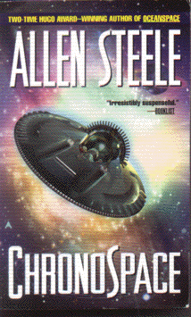

Chronospaceby Allen Steele
publisher: Penguin Publishing
Fiction, 316 pages | 
(book cover art, Copyright © 2001 Danilo Ducak)
Used with Permission. |
Return to the Book MenuPrevious|Next
Description:
When a pair of time travellers go back to visit the Hindenberg, they are surprised to discover that it doesn't explode -- somehow, they have changed the past, and this makes for a very different future, a future that they must fix!
Recommended for: History buffs, time travellers, people who like the complicated paradoxes Back to the Future, The Terminator or TimeCop
Did-you-read questions:
Deadline: February 1, 2005.
These should be easy questions, but you should have the questions ready and keep an eye out during your reading. Each question should be answered with 1-2 sentences.
Note: these questions are not probably not the most important part of the book! Your essay will not have to cover these questions!
- What unverifible entity does the expedition to New Mexico think they see?
- What is the name of the journalist that Franc meets in Germany?
- What is the response to Murphy's first successful time travel test?
- If you want to get into ICR, who should you ask for?
- Where does the Oberon end up?
Report Questions:Deadline: Peer Review Session on February 8, 2005; paper due February 10, 2005.
You should write a 3 - 4 page essay on one of the following questions. Your essay should include examples and references to the book, unless otherwise specified. Page number references are sufficient for citing material from the primary book. If you use outside materials, cite your sources in full. If you would rather write on a different topic, you may, but clear it with Mr. Howe or Ms. Sullivan first.
- Based on their experiences (and some outside influence) the crew of the Oberon make a decision that will affect the future of time travel for humanity. What do you think about the decision they made? Do you agree with it? Is it well justified? Use examples from the book to make your case.
- With all the bouncing around in time and space, a lot of contradictory events seem to happen. When all is said and done, however, does this story hold together. Are there unresolved paradoxes?
- As you may notice, from chapter to chapter, the story bounces around from character to character, location to location, even era to era. Is this an effective technique in the author's storytelling?
- One of the sections of this novel is called "Free Will." (This is not to be confused with Free Willy, which is an entirely different story.) What implications does this story have for people's level of free will in what they do? Do we really make it up as we go along, or does this story suggest something more akin to destiny?
Graphic and Presentation:
Deadline: February 21 - March 3, 2005.You will give a 10 minute presentation on both of the following:
- Convince your peers that they should (or should not) read this book. (This may include a brief summary of the book.) Give examples of what was cool or worthwhile in the book, and what you got out of it (or didn't).
- Describe a (realistic) science idea that you learned about in this book, citing information from at least 2 external sources (other than the dictionary). If you would like help choosing or understanding an idea from your book, you are invited to come talk to Mr. Howe or Ms. Sullivan.
Note: This presentation should not be just a reading of your paper!Along with this presentation, you should have a graphic that will go with it. A Power Point presentation is recommended, but if you have a special idea for a something else, such as a model, an original video presentation, or a well done drawing/ painting/ sculpture/ etc., you may do so, provided it involves a similar level of effort and polish. Speak to Mr. Howe or Ms. Sullivan first if you are considering an alternate graphic format to the Power Point.
Return to the Book MenuPrevious|Next